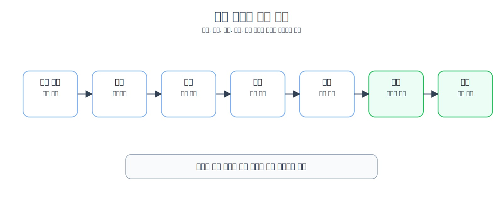
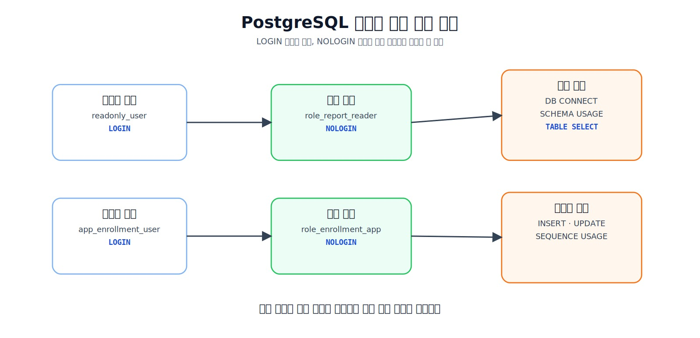
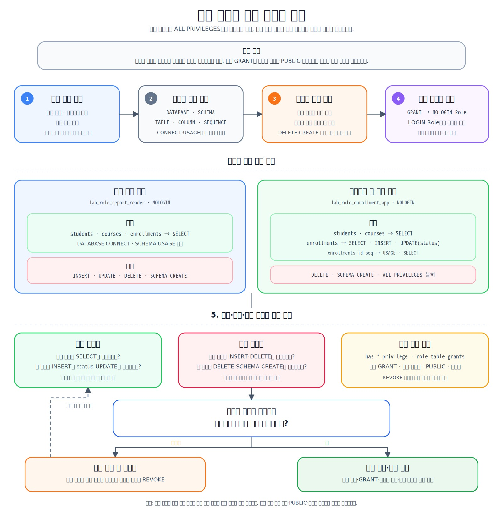
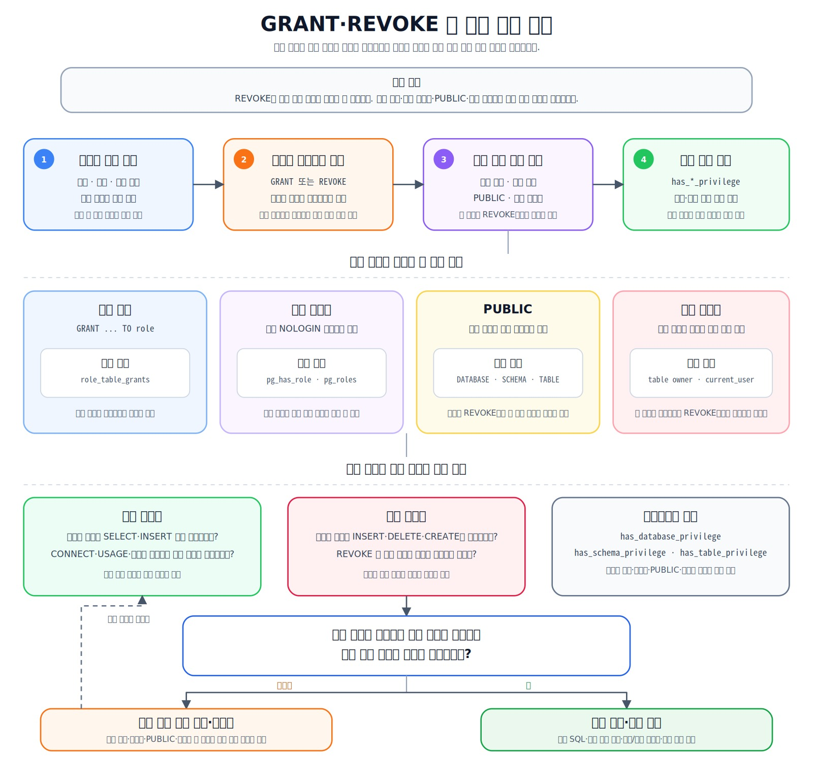
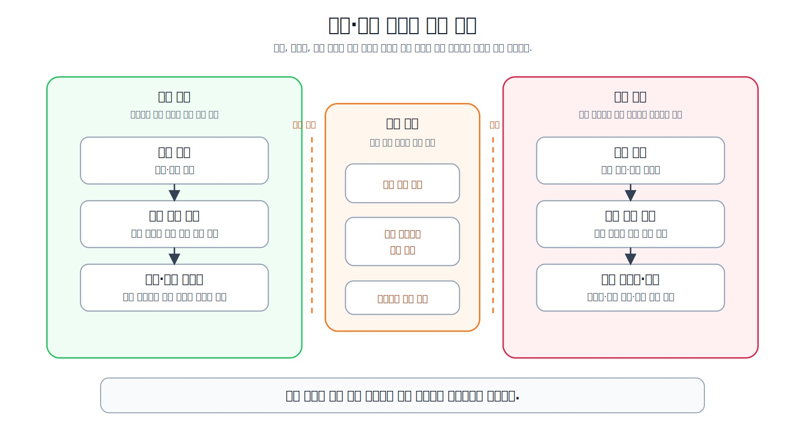
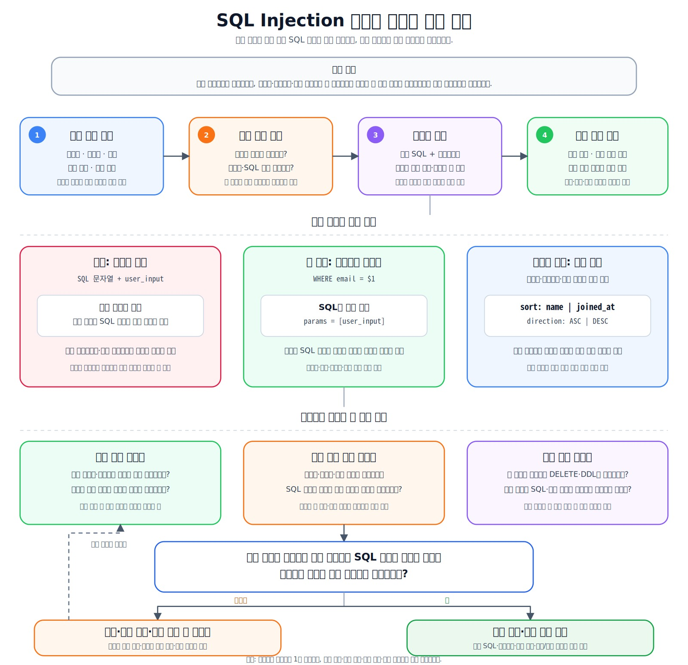
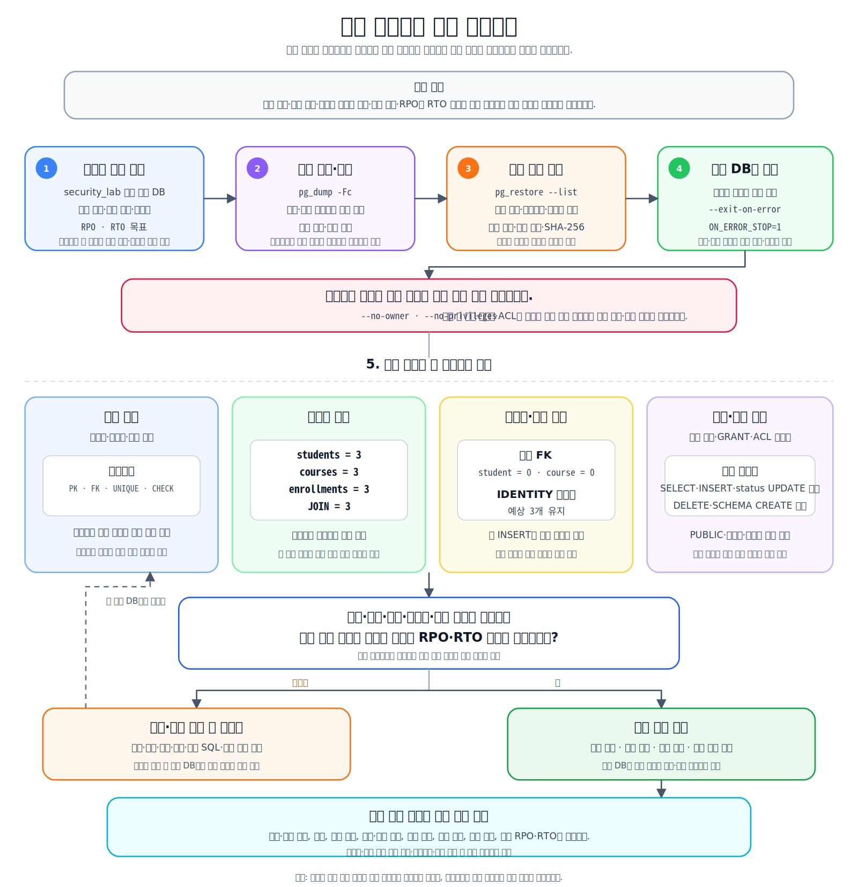
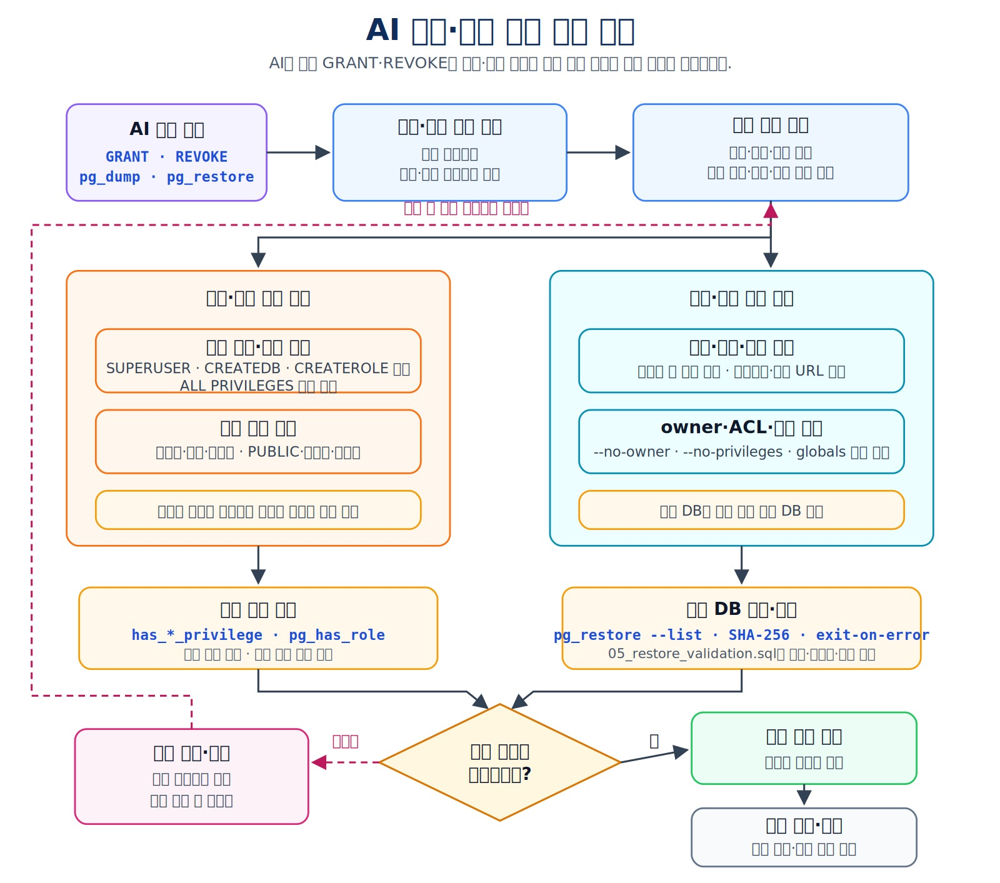

데이터베이스를 안전하게 지키고 복구하는 방법
빠른 데이터베이스를 넘어 필요한 작업만 허용하는 최소 권한과 역할 설계, 비밀정보 보호, 그리고 실제 복원으로 증명하는 백업·복구 체계를 PostgreSQL 운영 흐름에 맞춰 익힙니다.
권한은 최소화하면서도 실제 운영과 복원에 필요한 작업을 어떻게 검증할까?
이 장에서 살펴볼 내용
Chapter 10에서는 별도의 performance_lab에서 실행 계획과 인덱스 효과를 검증했습니다. 그러나 데이터베이스가 빨라도 접근 권한이 과도하거나, 접속 정보가 노출되거나, 백업 파일을 실제로 복원할 수 없다면 안전한 시스템이라고 할 수 없습니다.
이번 장은 PostgreSQL 16을 기준으로 보안과 복구를 하나의 운영 흐름으로 연결합니다.
보호 대상과 위험 식별
→ 로그인 역할·권한 역할·소유 역할 분리
→ 최소 권한 작업 행렬 작성
→ GRANT·REVOKE와 유효 권한 검증
→ PUBLIC·멤버십·소유권 경로 확인
→ 실제 허용·차단 동작 검증
→ 비밀 정보와 입력값 보호
→ 백업 계정·범위·의존성·RLS·버전 확인
→ custom archive 백업
→ 별도 DB에 원자적으로 복원
→ 구조·데이터·소유권·권한 2단계 검증
→ RPO·RTO와 복구 기록 갱신
이 장에서는 다음 내용을 다룹니다.
- 인증, 권한 부여, 객체 소유권과 감사의 차이
- PostgreSQL Role,
LOGIN,NOLOGIN과 역할 멤버십 - PostgreSQL 16의 membership
INHERIT,SET,ADMIN옵션 - 데이터베이스·스키마·테이블·컬럼·시퀀스 권한
- 직접 권한,
PUBLIC, 역할 멤버십과 유효 권한 - 현재 객체 권한과 미래 객체 Default Privileges
- 개발·테스트·운영 환경과 계정 분리
- 비밀번호·접속 URL·로그·password file·백업 파일 보호
- SQL Injection과 파라미터 바인딩
pg_dump,pg_restore,psql기반 논리 백업·복원- 백업 계정 권한, RLS와 스키마 외부 의존성
- custom archive의 owner·ACL 메타데이터와 복원 옵션
- 도구·서버 버전 호환성
- 백업 파일 목록·해시·별도 DB 복원 검증
- RPO, RTO와 복구 실행 기록
- AI가 만든 보안·백업 명령 검토
핵심 원칙
보안은 필요한 작업만 허용하고 실제 허용·차단 결과를 확인하는 일입니다. 백업은 파일을 만드는 데서 끝나지 않고 별도 환경에서 복원에 성공해야 의미가 있습니다.
1. 보안 통제와 복구 준비는 함께 설계한다
보안은 하나의 기능이 아니라 여러 통제의 조합입니다.

그림 11-1 보안 통제와 복구 준비
| 영역 | 핵심 질문 | 예시 |
|---|---|---|
| 인증 | 접속을 시도하는 주체는 누구인가? | 비밀번호, 인증서, 외부 인증 |
| 권한 부여 | 인증된 주체가 무엇을 할 수 있는가? | SELECT, INSERT, UPDATE |
| 소유권 | 객체 정의와 권한을 관리할 주체는 누구인가? | 테이블 소유 역할 |
| 입력 보호 | 외부 입력이 SQL 구조를 바꿀 수 있는가? | 파라미터 바인딩 |
| 비밀 보호 | 접속 정보와 백업 파일이 노출되지 않는가? | 비밀 저장소, 접근 통제 |
| 감사·기록 | 누가 언제 무엇을 실행했는가? | 접속 로그, 변경 기록 |
| 복구 | 장애·실수 후 필요한 상태로 돌아갈 수 있는가? | 백업, 복원 시험, Runbook |
인증에 성공했다고 모든 테이블을 읽을 수 있는 것은 아닙니다. 애플리케이션 접속 계정을 객체 소유자로 사용하면 DROP, ALTER와 권한 재부여까지 가능한 범위가 커질 수 있습니다.
보안과 복구도 분리해서 생각하면 안 됩니다. 권한을 지나치게 제한해 백업 계정이 필요한 데이터를 읽지 못하면 복구 준비가 실패하고, 반대로 백업 계정에 과도한 권한을 주면 보안 위험이 커집니다.
2. 기존 프로젝트를 보호하는 Chapter 11 구조
Chapter 11은 앞 장의 다음 객체를 삭제하거나 변경하지 않습니다.
course_project
transaction_lab
performance_lab
public
transaction_lab과 performance_lab은 실행 환경에 따라 이미 초기화되어 없을 수도 있습니다. Chapter 11은 이 두 스키마의 존재를 전제하지 않으며, 존재한다면 변경하지 않습니다.
Chapter 11의 필수 시작 기준은 Chapter 07·08에서 확정한 course_project입니다.
students / instructors / courses / enrollments = 3 / 2 / 3 / 5
상태 = 신청 2 / 수강중 1 / 완료 1 / 취소 1
course_project.enrollments.recorded_amount = NUMERIC(12,0)
전체 recorded_amount = 590000
활성 신청 = 3건 / 340000
취소 제외 이력 = 4건 / 440000
1001 = 완료 / 100000
1004 = 취소 / 150000
1005 = 신청 / 120000
uq_course_enrollments_active 존재
Chapter 07 명명 제약조건 15개 / NOT NULL 열 20개 유지
별도의 실습 스키마를 사용합니다.
security_lab.students
security_lab.courses
security_lab.enrollments
Role은 데이터베이스 하나가 아니라 PostgreSQL 클러스터 전역에 영향을 줄 수 있습니다. 따라서 역할 생성·삭제와 GRANT, REVOKE 예시는 기본적으로 주석 상태로 제공합니다.
code/chapter11/
├── 01_security_lab_schema.sql
├── 02_security_lab_seed.sql
├── 03_role_permission_plan.sql
├── 04_permission_checks.sql
├── 05_permission_behavior_tests.sql
├── 05_restore_validation.sql
├── 06_restore_validation.sql
├── BACKUP_RESTORE_RUNBOOK.md
├── reset_security_lab.sql
├── security_backup_check.sql
└── README.md
권장 실행 순서는 다음과 같습니다.
01 스키마·테이블 생성
→ 02 정상 샘플·IDENTITY 조정
→ 03 역할·권한 계획에서 필요한 문장만 선택 적용
→ 04 PUBLIC·ACL·멤버십·유효 권한 확인
→ 05 허용·차단 동작 선택 실습
→ 터미널에서 custom archive 백업
→ 별도 DB 생성·원자적 복원
→ 복원 DB에서 06 구조·데이터·소유권 검증
→ 역할 재적용 후 04·05 권한 재검증
→ BACKUP_RESTORE_RUNBOOK.md 기록
05_restore_validation.sql은 기존 링크 호환용 안내 파일입니다. 실제 복원 검증은 06_restore_validation.sql을 사용합니다.
모든 SQL 파일은 실행 위치를 먼저 확인합니다.
SELECT current_database();
SELECT current_schema();
SHOW search_path;
3. 보호할 자산과 위협을 먼저 정한다
| 자산 | 예 | 주요 위험 |
|---|---|---|
| 개인정보 | 이름, 이메일 | 과도한 조회, 외부 유출 |
| 인증 정보 | 비밀번호, 토큰, 접속 URL | 계정 탈취 |
| 업무 데이터 | 수강 상태, 기록 금액 | 무단 변경·삭제 |
| 데이터 구조 | 테이블, 제약조건 | 잘못된 ALTER, DROP |
| 로그 | SQL, 오류, 접속 기록 | 비밀 정보 기록 |
| 백업 파일 | 전체 데이터 사본 | 저장소·공유 경로 노출 |
| 복구 절차 | 계정, 순서, 검증 기준 | 장애 시 복구 지연 |
위험은 외부 공격만 의미하지 않습니다.
관리자의 잘못된 DELETE
개발 계정으로 운영 DB 접속
공개 저장소에 .env 또는 백업 파일 커밋
ALL PRIVILEGES를 가진 앱 계정
복원해 본 적 없는 오래된 백업
RLS 때문에 일부 행만 보이는 계정으로 전체 백업을 시도
AI가 만든 DROP·REVOKE·pg_restore 명령의 무검토 실행
보안 설계는 “무엇을 막을까?”보다 “이 역할이 실제로 해야 하는 작업은 무엇인가?”에서 시작하면 더 구체적입니다.
4. 인증·권한·소유권을 구분한다
PostgreSQL은 데이터베이스 접근 주체와 권한 묶음을 Role로 관리합니다.

그림 11-2 PostgreSQL 역할과 객체 권한 구조
| 개념 | 핵심 질문 | 예 |
|---|---|---|
| 인증 | 누가 접속했는가? | LOGIN Role, 인증 설정 |
| 권한 부여 | 어떤 객체에서 어떤 작업을 할 수 있는가? | SELECT, INSERT, USAGE |
| 소유권 | 객체 정의·삭제·권한 부여의 주체는 누구인가? | table owner |
| 역할 멤버십 | 다른 역할의 권한을 사용할 수 있는가? | GRANT role TO user |
| 감사 | 누가 무엇을 실행했는가? | 로그, 변경 기록 |
객체 소유자는 일반 GRANT와 별도로 객체를 변경하거나 삭제할 수 있습니다. 최소 권한 설계에서는 소유 역할과 실제 접속·실행 역할을 분리합니다.
SUPERUSER, CREATEDB, CREATEROLE은 일반 애플리케이션 업무 권한이 아닙니다. 필요성이 명확하지 않은 앱·보고·백업 역할에는 부여하지 않습니다.
5. 로그인 역할과 권한 역할을 분리한다
| 역할 종류 | LOGIN | 목적 | 예시 |
|---|---|---|---|
| 소유 역할 | 보통 NOLOGIN | 객체 소유와 권한 관리 | lab_role_security_owner |
| 읽기 권한 역할 | NOLOGIN | 보고용 조회 권한 묶음 | lab_role_report_reader |
| 앱 권한 역할 | NOLOGIN | 서비스 실행 권한 묶음 | lab_role_enrollment_app |
| 백업 권한 역할 | NOLOGIN | 백업용 읽기 권한 묶음 | lab_role_backup_reader |
| 읽기 로그인 역할 | LOGIN | 보고 사용자 접속 | lab_readonly_user |
| 앱 로그인 역할 | LOGIN | 애플리케이션 접속 | lab_enrollment_user |
| 백업 로그인 역할 | LOGIN | 백업 실행 주체 | lab_backup_user |
-- 관리자 권한이 있는 테스트 환경에서만 선택 실행
-- CREATE ROLE lab_role_report_reader NOLOGIN;
-- CREATE ROLE lab_role_enrollment_app NOLOGIN;
-- CREATE ROLE lab_role_backup_reader NOLOGIN;
-- CREATE ROLE lab_readonly_user LOGIN;
-- CREATE ROLE lab_enrollment_user LOGIN;
-- CREATE ROLE lab_backup_user LOGIN;
예제에는 실제 비밀번호를 넣지 않습니다. 역할 이름은 클러스터 전역에서 공유될 수 있으므로 기존 역할과 충돌하지 않는지 먼저 확인합니다.
PostgreSQL 16의 membership 옵션
PostgreSQL 16에서는 역할 멤버십마다 INHERIT, SET, ADMIN 옵션을 확인할 수 있습니다. 교재에서는 의도를 명확하게 하기 위해 자동 상속과 SET ROLE 사용을 명시합니다.
-- GRANT lab_role_report_reader TO lab_readonly_user
-- WITH INHERIT TRUE, SET TRUE;
-- GRANT lab_role_enrollment_app TO lab_enrollment_user
-- WITH INHERIT TRUE, SET TRUE;
-- GRANT lab_role_backup_reader TO lab_backup_user
-- WITH INHERIT TRUE, SET TRUE;
멤버십이 존재하는 것과 로그인 역할이 권한을 즉시 사용할 수 있는 것은 구분해야 합니다.
pg_has_role(..., 'MEMBER')
→ 멤버십 경로가 존재하는가?
pg_has_role(..., 'USAGE')
→ 현재 역할 설정에서 권한을 즉시 사용할 수 있는가?
pg_auth_members
→ inherit_option / set_option / admin_option은 무엇인가?
rolinherit만 보고 PostgreSQL 16의 membership별 설정까지 모두 확인했다고 생각하지 않습니다.
6. 권한은 객체 범위별로 나뉜다
| 범위 | 대표 권한 | 의미 |
|---|---|---|
| 데이터베이스 | CONNECT |
데이터베이스 접속 허용 |
| 스키마 | USAGE |
스키마 내부 객체 이름 사용 |
| 스키마 | CREATE |
스키마 안에 객체 생성 |
| 테이블 | SELECT, INSERT, UPDATE, DELETE |
행 조회·변경 |
| 컬럼 | SELECT, INSERT, UPDATE |
특정 컬럼 작업 |
| 시퀀스 | USAGE, SELECT, UPDATE |
번호 생성·조회·설정 |
| 역할 | 멤버십 | 다른 역할 권한 사용 |
CONNECT만 있다고 테이블을 읽을 수 없다.
스키마 USAGE만 있다고 SELECT할 수 없다.
INSERT 권한만 있다고 IDENTITY 자동값을 사용할 수 있는 것은 아니다.
IDENTITY가 사용하는 시퀀스의 nextval()에는 시퀀스 USAGE 또는 UPDATE 권한이 필요합니다. 앱 역할은 자동 번호 생성만 필요하므로 USAGE만 부여합니다.
백업 역할은 목적이 다릅니다. 현재 IDENTITY 시퀀스 상태까지 논리 백업에 포함시키는 실습이므로 세 시퀀스의 SELECT를 별도로 부여합니다. 같은 시퀀스라도 앱과 백업 역할이 필요한 작업이 다르므로 권한도 달라집니다.
7. security_lab 구조와 데이터 무결성
01_security_lab_schema.sql은 단순히 course_project.enrollments = 5만 보지 않고 Chapter 07·08의 기준 상태를 확인합니다.
현재 DB = ai_database_book
읽기 전용 연결 아님
course_project = 3 / 2 / 3 / 5
상태 = 신청2 / 수강중1 / 완료1 / 취소1
recorded_amount = NUMERIC(12,0)
전체 590000 / 활성 340000 / 취소 제외 440000
1001·1004·1005 기준 상태 일치
활성 신청 부분 고유 인덱스 존재
Chapter 07 명명 제약조건 15개 / NOT NULL 열 20개 유지
현재 역할이 ai_database_book에 CREATE 권한 보유
security_lab 미존재
스키마와 세 테이블은 하나의 트랜잭션에서 생성하고, COMMIT 전에 다음을 자동 검증합니다.
테이블 3개
명시 제약조건 13개
NOT NULL 컬럼 14개
recorded_amount NUMERIC(12,0)
부분 고유 인덱스 valid / ready
초기 행 수 0 / 0 / 0
구조는 다음과 같습니다.
security_lab.students
- id IDENTITY PK
- name NOT NULL + 공백 CHECK
- email NOT NULL + 공백 CHECK + 정확한 문자열 UNIQUE
- joined_at NOT NULL
security_lab.courses
- id IDENTITY PK
- title NOT NULL + 공백 CHECK
- level CHECK
- price CHECK
security_lab.enrollments
- id IDENTITY PK
- student_id·course_id FK
- status CHECK
- recorded_amount NUMERIC(12,0) + 0 이상 CHECK
- enrolled_at NOT NULL
recorded_amount는 결제 승인액이나 회계 매출이 아니라 신청 시점에 신청 행에 기록한 금액입니다. 실제 결제·환불 이력은 이 장의 범위가 아닙니다.
학생 이메일의 대소문자·별칭 정규화는 별도 정책으로 남깁니다.
Chapter 07 활성 신청 정책 유지
CREATE UNIQUE INDEX uq_security_enrollments_active
ON security_lab.enrollments (student_id, course_id)
WHERE status IN ('신청', '수강중');
완료·취소 이력은 여러 건 허용하지만 진행 중인 신청은 학생·강의 조합당 한 건입니다.
샘플과 IDENTITY
02_security_lab_seed.sql의 기준 상태는 다음과 같습니다.
students = 3
courses = 3
enrollments = 3
JOIN = 3
상태 = 신청1 / 수강중1 / 완료1 / 취소0
recorded_amount 합계 = 310000
활성 신청 = 2
활성 중복 = 0
모든 recorded_amount = 연결된 course.price
1001 = 101 / 201 / 수강중 / 100000
1002 = 102 / 202 / 신청 / 120000
1003 = 103 / 203 / 완료 / 90000
명시적 ID는 IDENTITY 내부 시퀀스의 다음 값을 자동으로 이동시키지 않습니다. 02는 다음 값으로 조정합니다.
students.id → 104
courses.id → 204
enrollments.id → 1004
권한 동작 시험에서 자동 ID INSERT를 실행한 뒤 ROLLBACK해도 사용된 시퀀스 번호는 회수되지 않을 수 있습니다. 번호 공백은 데이터 오류가 아닙니다.
8. 최소 권한을 작업 행렬로 설계한다

그림 11-3 최소 권한 설계 절차
| 객체·작업 | 보고 역할 | 수강신청 앱 역할 | 백업 역할 |
|---|---|---|---|
DB CONNECT |
허용 | 허용 | 허용 |
스키마 USAGE |
허용 | 허용 | 허용 |
students·courses·enrollments SELECT |
허용 | 허용 | 허용 |
enrollments INSERT |
불허 | 허용 | 불허 |
enrollments status UPDATE |
불허 | 허용 | 불허 |
enrollments recorded_amount UPDATE |
불허 | 불허 | 불허 |
enrollments ID 시퀀스 USAGE |
불필요 | 허용 | 불필요 |
세 IDENTITY 시퀀스 SELECT |
불필요 | 불허 | 허용 |
DELETE, TRUNCATE |
불허 | 불허 | 불허 |
스키마 CREATE |
불허 | 불허 | 불허 |
-- GRANT USAGE ON SCHEMA security_lab
-- TO lab_role_report_reader, lab_role_enrollment_app, lab_role_backup_reader;
-- GRANT SELECT ON TABLE
-- security_lab.students,
-- security_lab.courses,
-- security_lab.enrollments
-- TO lab_role_report_reader, lab_role_enrollment_app, lab_role_backup_reader;
-- GRANT INSERT ON TABLE security_lab.enrollments
-- TO lab_role_enrollment_app;
-- GRANT UPDATE (status) ON TABLE security_lab.enrollments
-- TO lab_role_enrollment_app;
-- GRANT USAGE
-- ON SEQUENCE security_lab.enrollments_id_seq
-- TO lab_role_enrollment_app;
-- GRANT SELECT ON SEQUENCE
-- security_lab.students_id_seq,
-- security_lab.courses_id_seq,
-- security_lab.enrollments_id_seq
-- TO lab_role_backup_reader;
기본 예시에서는 SUPERUSER, CREATEDB, CREATEROLE, ALL PRIVILEGES를 부여하지 않습니다.
9. GRANT·REVOKE 후 유효 권한과 경로를 확인한다

그림 11-4 GRANT·REVOKE와 유효 권한 확인
REVOKE는 특정 경로의 권한을 회수합니다. 다음 경로로 같은 작업이 여전히 가능할 수 있습니다.
직접 부여된 권한
다른 권한 역할 멤버십
PUBLIC 권한
객체 소유권
membership INHERIT 경로
SET ROLE로 전환 가능한 역할
유효 권한과 ACL 구분
has_*_privilege
→ 로그인 역할이 최종적으로 작업할 수 있는가?
pg_database.datacl·pg_namespace.nspacl·객체 ACL
→ 직접 GRANT와 PUBLIC 같은 권한 경로는 무엇인가?
데이터베이스에는 기본적으로 PUBLIC CONNECT가 존재할 수 있습니다. has_database_privilege(..., 'CONNECT') = true만으로 실습 역할에 직접 부여한 GRANT 덕분이라고 단정하지 않습니다.
PUBLIC 테이블 권한 조회
information_schema.role_table_grants와 role_column_grants는 PUBLIC 경로를 제외할 수 있습니다. PUBLIC 권한은 다음 뷰에서 확인합니다.
SELECT *
FROM information_schema.table_privileges
WHERE table_schema = 'security_lab'
AND grantee = 'PUBLIC';
SELECT *
FROM information_schema.column_privileges
WHERE table_schema = 'security_lab'
AND grantee = 'PUBLIC';
무조건적인 REVOKE ALL ... FROM PUBLIC은 다른 계정 접속과 애플리케이션에 영향을 줄 수 있으므로 별도 테스트 DB에서 의존성을 먼저 확인합니다.
10. 현재 객체와 미래 객체 권한을 구분한다
현재 객체 GRANT
→ 지금 존재하는 객체에 적용
ALTER DEFAULT PRIVILEGES
→ 특정 역할이 앞으로 생성할 객체의 기본 권한 설정
-- ALTER DEFAULT PRIVILEGES
-- FOR ROLE lab_role_security_owner
-- IN SCHEMA security_lab
-- GRANT SELECT ON TABLES TO lab_role_report_reader;
Default Privileges는 어떤 역할이 미래 객체를 생성하는가에 따라 달라집니다. 기존 객체의 권한을 바꾸지도 않습니다.
복원에서도 이 점이 중요합니다. pg_restore --no-privileges로 원본 ACL을 적용하지 않아도 복원 역할 자체에 Default Privileges가 설정되어 있다면 새 객체 생성 시 다른 ACL이 생길 수 있으므로 실제 ACL을 조회합니다.
11. 권한은 실제 허용·차단 동작으로 확인한다
04_permission_checks.sql은 ACL·PUBLIC·membership·RLS·유효 권한을 확인하고, 05_permission_behavior_tests.sql은 실제 SQL 동작을 확인합니다.
읽기 계정
- SELECT 성공
- INSERT·UPDATE·DELETE 실패
앱 계정
- SELECT 성공
- ID 생략 INSERT 성공
- status UPDATE 성공
- recorded_amount UPDATE 실패
- DELETE 실패
- schema CREATE 실패
성공 테스트는 마지막에 ROLLBACK해 기준 데이터를 보존합니다. 실패 테스트는 한 문장씩 선택 실행하며 오류 후 ROLLBACK TO SAVEPOINT 또는 ROLLBACK으로 트랜잭션을 복구합니다.
테이블 전체 UPDATE 권한이 false이면서 status 컬럼 UPDATE 권한만 true인지 확인하는 것이 중요합니다.
05의 마지막 자동 검증은 행 데이터가 여전히 3 / 3 / 3, 총 recorded_amount = 310000, 활성 중복 0인지 확인합니다. 단, 시퀀스 번호는 ROLLBACK 후에도 증가했을 수 있으므로 정확히 1004인지 다시 요구하지 않습니다.
12. 역할 소유권과 안전한 정리
소유 역할로 객체 소유권을 이전했다면 해당 역할을 곧바로 삭제할 수 없습니다.
다른 역할로 소유권 이전
→ 남은 권한과 객체 의존성 검토
→ 관련된 각 데이터베이스에서 확인
→ 역할 삭제
-- 파괴적일 수 있으므로 자동 실행하지 않습니다.
-- REASSIGN OWNED BY lab_role_security_owner TO <successor_owner>;
-- DROP OWNED BY lab_role_security_owner;
-- DROP ROLE lab_role_security_owner;
REASSIGN OWNED와 DROP OWNED는 현재 데이터베이스의 객체·권한뿐 아니라 Role이 가진 의존성을 다루므로, 클러스터의 관련 데이터베이스마다 조사해야 합니다.
DROP OWNED ... CASCADE는 다른 객체까지 삭제할 수 있으므로 기본 정리 명령으로 제공하지 않습니다.
13. 개발·테스트·운영 환경과 비밀 정보를 분리한다

그림 11-5 개발·운영 환경과 계정 분리
| 환경 | 데이터 | 계정 | 권한 | 백업 |
|---|---|---|---|---|
| 개발 | 가상·비식별 데이터 | 개발 전용 | 필요한 개발 권한 | 짧은 보존 가능 |
| 테스트 | 검증용 데이터 | 테스트 전용 | 운영과 유사한 제한 | 복원 시험 가능 |
| 운영 | 실제 데이터 | 운영 전용 | 최소 권한 | 암호화·보존·감사 |
루트 .env.example에는 변수 이름만 둡니다.
PGHOST=
PGPORT=
PGDATABASE=
PGUSER=
PGPASSFILE=
PGPASSWORD를 저장소 예제에 두지 않습니다. PostgreSQL 16 공식 문서도 일부 운영체제에서 프로세스 환경 변수가 다른 사용자에게 보일 수 있어 PGPASSWORD 사용을 권장하지 않습니다. 대신 실제 libpq password file은 저장소 밖에 두고 PGPASSFILE로 위치를 지정합니다.
Unix 계열에서는 password file이 그룹·다른 사용자에게 읽히지 않도록 chmod 0600 수준으로 제한해야 하며, 권한이 느슨하면 libpq가 파일을 무시합니다. Windows는 별도 파일 권한 검사를 하지 않으므로 사용자 프로필의 PostgreSQL 암호 파일 위치나 접근이 제한된 보호 경로에 저장합니다.
비밀 정보가 노출되면 Git 기록에서 파일만 삭제하지 않습니다. 먼저 비밀번호·토큰을 폐기하거나 회전하고, 로그·복제본·캐시와 배포 환경의 노출 범위를 확인합니다.
14. SQL Injection은 SQL 구조와 값을 분리해 방어한다

그림 11-6 문자열 결합과 파라미터 바인딩
위험한 방향:
"SELECT * FROM security_lab.students WHERE email = '"
+ user_input
+ "'"
안전한 방향:
SQL: SELECT * FROM security_lab.students WHERE email = $1
값: user_input
값은 파라미터로 바인딩합니다. 테이블명, 컬럼명과 정렬 방향은 일반적으로 값 파라미터로 바인딩할 수 없으므로 애플리케이션 허용 목록에서만 선택합니다.
허용 정렬 컬럼: name, joined_at
허용 정렬 방향: asc, desc
그 밖의 값: 거부
입력 검증 하나만으로 방어가 끝나지 않습니다. 파라미터 바인딩, 허용 목록, 최소 권한 계정, 오류 메시지 제한과 보안 테스트를 함께 사용합니다.
최소 권한은 SQL Injection 자체를 막는 기능은 아니지만 공격이 성공했을 때 가능한 작업 범위를 줄이는 중요한 추가 방어선입니다.
15. 로그와 백업 파일도 민감 데이터다
백업을 공개 저장소에 커밋하지 않는다.
백업이 자동으로 암호화된다고 가정하지 않는다.
저장 위치·전송 경로·보관 기간·삭제 정책을 정한다.
백업 접근 권한과 다운로드 기록을 관리한다.
로그에 비밀번호·토큰·전체 접속 URL을 남기지 않는다.
복원용 임시 DB와 임시 파일도 삭제 정책에 포함한다.
백업 파일에는 원본 테이블의 개인정보와 업무 데이터가 그대로 포함될 수 있습니다. 따라서 운영 DB와 같은 수준의 접근 통제와 보관 정책을 적용합니다.
파일 해시를 공개해도 원본 내용을 직접 노출하지는 않지만, 백업 경로·파일명·메타데이터를 불필요하게 공개할 이유도 없습니다.
16. 백업·복제·고가용성은 목적이 다르다
| 방식 | 주요 목적 | 실수 삭제 대응 | 주의점 |
|---|---|---|---|
| 논리 백업 | 구조·데이터 복원·이관 | 백업 시점으로 복원 가능 | 복원 시간·의존 객체 검증 |
| 물리 백업·PITR | 클러스터와 특정 시점 복구 | 설정에 따라 가능 | WAL·보관 정책 필요 |
| 복제 | 가용성·읽기 분산 | 삭제가 그대로 복제될 수 있음 | 백업 대체 불가 |
| 스냅샷 | 스토리지 시점 사본 | 일관성·보존 정책에 따라 다름 | DB 일관성과 복원 시험 필요 |
복제본이 있다고 해서 백업이 있는 것은 아닙니다. 잘못된 DELETE가 즉시 복제되면 복제본에도 같은 삭제가 반영될 수 있습니다.
이 장에서는 입문 수준의 논리 백업과 복원 검증에 집중합니다.
17. 백업 전 버전·계정·RLS·의존성을 확인한다
도구와 서버 버전
pg_dump --version
pg_restore --version
psql --version
SHOW server_version;
pg_dump 주요 버전이 원본 서버보다 오래되면 중단한다.
복원에는 가능하면 백업 생성에 사용한 것과 같은 주요 버전의 pg_restore를 사용한다.
복원 서버가 원본보다 오래된 주요 버전이면 호환성을 별도로 검토한다.
확장 기능과 외부 모듈 버전도 확인한다.
교재 자동 검증 기준은 PostgreSQL 16입니다. 운영 환경에서는 실제 서버·클라이언트 버전을 기록합니다.
백업 계정 최소 권한
DB CONNECT
security_lab USAGE
대상 테이블 SELECT
IDENTITY 시퀀스 상태 확인을 위한 SELECT
RLS 적용 여부
백업 후 권한 유지·회수 정책
lab_backup_user는 실제 접속 역할이고 lab_role_backup_reader는 권한 묶음입니다. 둘을 분리하면 백업 실행 주체를 바꾸더라도 권한 정책을 재사용하기 쉽습니다.
RLS는 “일부 행 백업”을 조용히 허용하는 설정으로 생각하지 않는다
일반적인 전체 논리 백업에서 pg_dump는 Row-Level Security를 끄고 모든 행을 읽으려 합니다. 백업 역할이 정책을 우회할 수 없다면 오류로 중단될 수 있습니다. 이 동작은 일부 행만 백업하고도 성공으로 착각하는 일을 막는 데 도움이 됩니다.
--enable-row-security는 역할에게 보이는 행만 의도적으로 덤프하려는 경우에 검토하는 옵션입니다. 이것을 운영 전체 백업과 같은 의미로 사용하지 않습니다. 교재의 security_lab은 RLS를 사용하지 않으며 04_permission_checks.sql에서 relrowsecurity = false인지 확인합니다.
특정 스키마 백업의 의존성
--schema=security_lab은 외부 의존 객체를 자동으로 모두 포함한다고 보장하지 않습니다.
외부 스키마 FK
사용자 정의 타입
함수·트리거
확장 기능
Large Object
외부 테이블
교재의 security_lab은 외부 스키마 의존성 없이 단독 복원할 수 있도록 설계했습니다.
18. 백업 범위와 형식을 결정한다
security_lab custom format 백업
pg_dump \
-U <backup_user> \
-d ai_database_book \
-Fc \
--schema=security_lab \
-f <backup-dir>/security_lab.backup
여기서는 custom archive에 원본 객체의 owner·ACL 메타데이터도 보존합니다. 중요한 점은 archive 형식의 pg_dump --no-owner로 소유권을 제거한다고 생각하지 않는 것입니다. custom archive에서 실제 소유권 적용 여부는 복원 시 pg_restore --no-owner로 제어합니다.
테스트 복원에서는 다음처럼 원본 owner와 ACL의 적용을 의도적으로 생략합니다.
pg_restore --no-owner --no-privileges
이 방식의 장점은 하나의 archive에 원본 메타데이터를 보존하면서도, 이동성 검증 DB에서는 복원 역할이 객체를 소유하도록 만들고 권한은 2단계에서 별도로 검증할 수 있다는 점입니다.
전체 데이터베이스 선택안
pg_dump \
-U <backup_user> \
-d ai_database_book \
-Fc \
-f <backup-dir>/ai_database_book.backup
전역 객체 선택안
데이터베이스 덤프에는 Role과 Tablespace 같은 클러스터 전역 객체가 포함되지 않습니다.
pg_dumpall \
--globals-only \
--no-role-passwords \
-U <admin_user> \
-f <secure-backup-dir>/globals.sql
인증 정보까지 복구해야 한다면 --no-role-passwords를 사용하지 않을 수 있지만 파일을 더 엄격하게 보호해야 합니다. 같은 클러스터에서는 기존 Role·Tablespace와 충돌할 수 있으므로 내용을 검토 없이 실행하지 않습니다.
19. 백업 파일 자체를 검증한다
명령 종료 코드와 표준 오류 확인
파일 크기·생성 시각·대상 DB 기록
pg_restore --list로 아카이브 목록 확인
SHA-256 해시 기록
보관 위치와 접근 권한 확인
pg_restore --list <backup-dir>/security_lab.backup
목록에서 다음을 확인합니다.
security_lab 스키마
students / courses / enrollments
세 IDENTITY 시퀀스와 sequence set
PK·FK·UNIQUE·CHECK
uq_security_enrollments_active
ACL 항목이 archive에 있는지 여부
예상하지 않은 외부 객체가 없는지
Windows PowerShell:
Get-FileHash <backup-dir>\security_lab.backup -Algorithm SHA256
Linux·macOS:
sha256sum <backup-dir>/security_lab.backup
해시는 파일이 변경되었는지를 확인하는 근거이며 실제로 복원된다는 증거는 아닙니다.
20. 별도 데이터베이스에 원자적으로 복원한다

그림 11-7 백업 생성에서 복구 검증까지
원본 DB에 덮어쓰지 않고 복원 역할이 소유하는 깨끗한 검증 DB를 만듭니다.
createdb \
-U <admin_user> \
-O <restore_user> \
-T template0 \
ai_database_book_restore
작은 security_lab 실습은 전체 복원을 하나의 트랜잭션으로 묶습니다.
pg_restore \
-U <restore_user> \
-d ai_database_book_restore \
--single-transaction \
--no-owner \
--no-privileges \
<backup-dir>/security_lab.backup
--single-transaction
→ 작은 실습에서 전체 복원을 한 트랜잭션으로 묶어 부분 객체 잔존 위험을 줄인다.
--no-owner
→ archive의 원본 owner 지정 명령을 적용하지 않고 복원 실행 역할이 객체를 소유하게 한다.
--no-privileges
→ archive의 GRANT·REVOKE ACL 적용을 생략한다.
대규모 운영 복원에서는 긴 트랜잭션, 잠금, WAL, 디스크 공간과 자원 사용을 별도로 검토합니다.
Plain SQL 복원:
psql \
-X \
-1 \
-U <restore_user> \
-d ai_database_book_restore \
-v ON_ERROR_STOP=1 \
-f <backup-dir>/security_lab.sql
-X → 사용자 psqlrc 설정 제외
-1 → 파일 전체를 하나의 트랜잭션으로 처리
ON_ERROR_STOP=1 → 첫 오류에서 중단
신뢰할 수 없는 덤프는 검토 없이 복원하지 않습니다. 덤프는 단순 데이터 파일이 아니라 대상 서버에서 SQL과 객체 정의를 실행하게 만드는 입력입니다.
21. 복원 검증은 두 단계로 나눈다
1단계: 구조·데이터·소유권
복원 DB에서 06_restore_validation.sql을 실행합니다. 이 파일은 원본 ai_database_book에서 실행하면 예외를 발생시킵니다.
현재 DB = ai_database_book_restore
students·courses·enrollments = 3·3·3
JOIN = 3
상태 = 신청1 / 수강중1 / 완료1 / 취소0
총 recorded_amount = 310000
recorded_amount = NUMERIC(12,0)
recorded_amount와 course.price 불일치 = 0
고아 FK = 0
활성 신청 중복 = 0
NOT NULL 컬럼 = 14
13개 명시 제약조건 유지
부분 고유 인덱스 valid / ready
IDENTITY 시퀀스 3개
다음 자동값 > 기존 최대 ID
schema·table·sequence owner = 복원 역할
custom archive에는 원본 ACL이 들어 있을 수 있지만 pg_restore --no-privileges를 사용한 검증 복원에서는 이를 적용하지 않습니다. 다만 복원 역할의 Default Privileges가 새 객체에 적용될 수 있으므로 실제 ACL은 반드시 조회합니다.
2단계: 역할·권한 재적용
03 역할·권한 계획 검토
→ 필요한 Role·GRANT 적용
→ 04 PUBLIC·ACL·membership·유효 권한 확인
→ 05 허용·차단 DML 검증
| 역할 | SELECT | INSERT | status UPDATE | recorded_amount UPDATE | DELETE | schema CREATE |
|---|---|---|---|---|---|---|
| 읽기 계정 | 성공 | 실패 | 실패 | 실패 | 실패 | 실패 |
| 앱 계정 | 성공 | 성공 | 성공 | 실패 | 실패 | 실패 |
백업 역할도 별도로 검증합니다.
테이블 SELECT = 성공
세 IDENTITY 시퀀스 SELECT = 성공
INSERT·UPDATE·DELETE·schema CREATE = 실패
검증이 실패하면 백업 파일을 성공으로 표시하지 않습니다. 원인을 수정하고 다시 백업·복원·검증합니다.
22. RPO·RTO와 복구 실행 기록
| 기준 | 질문 | 예시 |
|---|---|---|
| RPO | 어느 시점까지의 데이터 손실을 허용하는가? | 최대 1시간 |
| RTO | 장애 후 얼마 안에 서비스를 재개해야 하는가? | 2시간 |
RPO가 1시간인데 하루 한 번만 백업하면 목표를 충족하지 못할 수 있습니다. RTO가 짧다면 백업 파일이 있어도 복원 시간이 너무 길 수 있습니다.
BACKUP_RESTORE_RUNBOOK.md에는 다음을 기록합니다.
서버·pg_dump·pg_restore·psql 버전
백업 로그인 역할과 권한 역할
membership INHERIT·SET 상태
백업 범위와 외부 의존성
RLS 적용 여부와 처리 결정
파일 경로·크기·해시
archive 목록
복원 DB owner와 template
복원 옵션(--single-transaction / --no-owner / --no-privileges)
복원 시작·완료 시각
구조·데이터·소유권 검증 결과
역할·권한 재적용 검증 결과
오류와 해결 방법
RPO·RTO 충족 여부
다음 복원 시험 날짜
복구 절차는 담당자의 기억이 아니라 반복 실행할 수 있는 문서여야 합니다.
23. AI 보안·백업 명령 검토

그림 11-8 AI 보안·백업 명령 검토 흐름
PostgreSQL 16 security_lab의 최소 권한과 백업·복원 명령 초안을 작성해 주세요.
조건:
- 실제 비밀번호·전체 접속 URL 작성 금지
- SUPERUSER, CREATEDB, CREATEROLE, ALL PRIVILEGES 금지
- 로그인 역할과 NOLOGIN 권한 역할 분리
- PostgreSQL 16 membership의 INHERIT·SET 경로 확인
- 앱은 students·courses·enrollments SELECT
- enrollments는 INSERT와 status 컬럼 UPDATE만 추가 허용
- recorded_amount UPDATE 금지
- 앱 시퀀스는 자동 ID에 필요한 최소 USAGE
- 백업 역할은 테이블 SELECT와 IDENTITY 시퀀스 SELECT 검토
- PUBLIC·직접 GRANT·멤버십·소유권을 구분
- 백업 계정 권한과 RLS 확인
- --enable-row-security를 전체 백업과 혼동하지 않음
- 특정 스키마 외부 의존성 확인
- 도구·서버 버전 검사
- custom archive에서 pg_dump --no-owner 효과를 잘못 설명하지 않음
- 원본 DB 복원 금지
- template0 기반 별도 DB와 복원 역할 owner 지정
- 작은 실습은 single-transaction 복원
- pg_restore --no-owner --no-privileges 사용
- 구조·데이터와 권한을 두 단계로 검증
| 검토 영역 | 확인 질문 |
|---|---|
| 환경 | 테스트·운영과 원본·복원 DB가 명확한가? |
| 권한 | 실제 작업보다 과도하지 않은가? |
| membership | MEMBER·USAGE·INHERIT·SET을 구분하는가? |
| PUBLIC | 최종 권한과 부여 경로를 구분하는가? |
| 비밀 | 비밀번호·password file·접속 URL이 없는가? |
| 백업 계정 | 필요한 객체·시퀀스를 읽을 수 있는가? |
| RLS | 전체 백업과 가시 행 백업을 구분하는가? |
| 범위 | 스키마 외부 의존성을 확인했는가? |
| 버전 | 도구와 서버의 호환성을 확인했는가? |
| archive | owner·ACL 메타데이터와 restore 옵션을 구분하는가? |
| 복원 역할 | 복원 DB owner와 일치하는가? |
| 실패 처리 | 부분 복원 방지와 오류 중단 옵션이 있는가? |
| 검증 | 별도 DB에서 자동 판정하는가? |
| 정리 | 임시 DB·파일·Role 정리 계획이 있는가? |
위험한 제안:
앱 계정에 SUPERUSER 또는 ALL PRIVILEGES 부여
PUBLIC 권한 경로를 확인하지 않음
실제 비밀번호를 CREATE ROLE에 포함
PGPASSWORD를 저장소 예제로 권장
RLS가 있는 계정으로 일부 행만 백업하고 전체 백업이라고 단정
custom archive에서 pg_dump --no-owner가 owner 메타데이터를 제거한다고 설명
원본 DB에 --clean 복원
복원 DB owner와 restore_user 불일치
--exit-on-error만 사용하고 부분 복원을 고려하지 않음
스키마 외부 의존성을 확인하지 않음
복원 없이 백업 성공이라고 단정
24. 자주 하는 실수
- 인증 성공을 모든 데이터 접근 허용과 동일하게 생각한다.
- 앱 계정을 객체 소유자로 사용한다.
REVOKE한 번으로 모든 권한이 사라졌다고 생각한다.role_table_grants로 PUBLIC 권한까지 확인했다고 생각한다.CONNECT = true를 직접GRANT CONNECT의 결과로만 해석한다.- PostgreSQL 16에서
rolinherit만 보고 membership별INHERIT·SET을 확인하지 않는다. - 현재 테이블
GRANT가 미래 테이블에도 적용된다고 생각한다. - 앱에 시퀀스
SELECT까지 관성적으로 부여한다. - 반대로 백업 역할의 시퀀스 상태 읽기 목적을 검토하지 않는다.
- 실제 비밀번호·접속 URL·password file을 저장소에 기록한다.
- 값 바인딩으로 테이블명까지 안전해진다고 생각한다.
- 백업 계정이 모든 데이터를 자동으로 읽는다고 생각한다.
- RLS가 적용된 일부 행 덤프를 전체 백업과 혼동한다.
- 특정 스키마 덤프가 모든 외부 의존성을 포함한다고 생각한다.
- 백업 도구와 서버 버전을 확인하지 않는다.
- custom archive의
pg_dump --no-owner와pg_restore --no-owner역할을 혼동한다. - 백업이 자동으로 암호화된다고 생각한다.
- 파일 목록·해시만으로 복구 가능하다고 판단한다.
- 관리자 소유 DB에 권한 없는 계정으로 복원한다.
- 오류 중단만 설정하고 부분 복원 객체를 고려하지 않는다.
- 원본 DB에서 복원 검증 SQL을 실행한다.
- 소유 객체를 이전하지 않고 소유 역할을 삭제하려 한다.
25. 스스로 확인하기
- 인증·권한 부여·소유권은 어떻게 다른가요?
- LOGIN 역할과 NOLOGIN 권한 역할을 분리하는 이유는 무엇인가요?
- 백업 로그인 역할과 백업 권한 역할을 분리하면 어떤 장점이 있나요?
CONNECT, schemaUSAGE, tableSELECT가 각각 필요한 이유는 무엇인가요?- IDENTITY INSERT에서 시퀀스
USAGE를 확인해야 하는 이유는 무엇인가요? - 앱의 시퀀스
USAGE와 백업의 시퀀스SELECT목적은 어떻게 다른가요? MEMBER와USAGE역할 확인은 어떻게 다른가요?- PostgreSQL 16의 membership
inherit_option,set_option은 무엇을 보여 주나요? REVOKE후에도 권한이 남을 수 있는 경로는 무엇인가요?- PUBLIC 권한을
role_table_grants에서만 확인하면 안 되는 이유는 무엇인가요? - Default Privileges가 기존 객체 권한을 바꾸지 않는 이유는 무엇인가요?
- 값 파라미터와 동적 식별자의 안전 처리 방식은 어떻게 다른가요?
- RLS 테이블을 백업할 때
--enable-row-security를 신중히 봐야 하는 이유는 무엇인가요? - 스키마 백업 전 외부 의존성을 확인해야 하는 이유는 무엇인가요?
- custom archive에서 owner 정보와
pg_restore --no-owner는 어떤 관계인가요? --no-owner --no-privileges복원의 장점과 후속 작업은 무엇인가요?--single-transaction복원이 작은 실습에서 유용한 이유는 무엇인가요?- 파일 해시가 실제 복원 시험을 대신할 수 없는 이유는 무엇인가요?
- RPO와 RTO는 백업 주기와 복원 절차에 어떤 영향을 주나요?
- 소유 역할을 삭제하기 전에
REASSIGN OWNED를 검토하는 이유는 무엇인가요?
26. 권장 해설
권한 모델
인증은 접속 주체 확인,
권한 부여는 객체 작업 허용,
소유권은 객체 정의와 권한 관리 책임이다.
CONNECT → DB 접속
USAGE → 스키마 내부 객체 이름 사용
SELECT → 테이블 행 조회
PostgreSQL 16 역할 멤버십
MEMBER는 멤버십 경로 존재 여부,
USAGE는 현재 설정에서 권한을 사용할 수 있는지,
pg_auth_members의 inherit_option·set_option은
자동 상속과 SET ROLE 가능 경로를 더 구체적으로 보여 준다.
시퀀스와 IDENTITY
앱이 ID를 생략한 INSERT를 하려면 enrollments INSERT와 시퀀스 USAGE가 필요하다.
일반 자동 ID 생성에 시퀀스 SELECT를 반드시 부여할 필요는 없다.
백업 역할은 IDENTITY 시퀀스 상태를 보존하기 위해 SELECT를 별도 검토한다.
명시적 ID 입력 후 IDENTITY 시작값은 별도로 조정한다.
nextval이 호출된 번호는 트랜잭션 ROLLBACK으로 회수되지 않을 수 있다.
기록 금액
recorded_amount는 신청 행에 기록한 금액이다.
결제 승인액·환불 반영 순매출·회계 매출로 해석하지 않는다.
security_lab 기준 합계는 310000이다.
백업과 복원
--schema 덤프는 외부 의존 객체를 자동으로 모두 포함하지 않는다.
custom archive에는 owner·ACL 메타데이터를 보존할 수 있다.
검증 복원에서 pg_restore --no-owner --no-privileges로 적용을 생략한다.
파일 목록과 해시는 파일 검증이고, 별도 DB 복원은 복구 가능성 검증이다.
작은 실습의 single-transaction 복원은 오류 시 부분 객체가 남는 위험을 줄인다.
RLS가 있는 경우 전체 백업과 역할 가시 행 백업을 구분한다.
RPO와 RTO
RPO는 허용 데이터 손실 시점,
RTO는 서비스 재개까지 허용 시간이다.
백업 주기와 실제 복원 시간이 두 목표를 모두 충족해야 한다.
27. 핵심 정리
1. 인증·권한·소유권·감사는 서로 다른 통제다.
2. 로그인 역할·권한 역할·소유 역할을 분리한다.
3. PostgreSQL 16 membership의 MEMBER·USAGE·INHERIT·SET 경로를 구분한다.
4. 최소 권한은 역할별 실제 작업 행렬에서 시작한다.
5. 유효 권한과 PUBLIC·직접 GRANT·멤버십·소유권 경로를 함께 본다.
6. 현재 객체 GRANT와 미래 객체 Default Privileges를 구분한다.
7. 허용·차단 동작을 실제 SQL과 ROLLBACK으로 확인한다.
8. 비밀번호·접속 URL·password file·백업은 저장소 밖에서 보호한다.
9. SQL Injection은 바인딩·허용 목록·최소 권한을 함께 사용한다.
10. 백업 전에 계정 권한·시퀀스·RLS·의존성·버전을 확인한다.
11. custom archive의 메타데이터와 pg_restore의 owner·ACL 적용 옵션을 구분한다.
12. 별도 DB owner와 복원 역할을 맞추고 원자적으로 복원한다.
13. 구조·데이터 검증과 역할·권한 검증을 두 단계로 수행한다.
14. RPO·RTO와 복원 결과를 반복 가능한 Runbook으로 유지한다.
이 장에서 기억할 문장은 다음과 같습니다.
허용할 작업은 최소화하고,
복구 가능성은 별도 환경의 실제 복원으로 증명한다.
28. 다음 장에서는
Chapter 12에서는 관계형 데이터베이스와 다른 데이터 모델을 제공하는 NoSQL을 살펴봅니다.
문서·키-값·그래프·와이드 컬럼 모델
스키마 유연성과 데이터 중복
일관성·확장성·조회 패턴
PostgreSQL JSONB와 전용 NoSQL의 차이
관계형 DB와 NoSQL 선택 기준
AI가 제안한 저장소 선택 검토
보안과 복구는 특정 DBMS에만 필요한 기능이 아닙니다. 어떤 저장소를 선택하더라도 접근 통제, 비밀 보호, 백업과 복구 검증을 함께 설계해야 합니다.